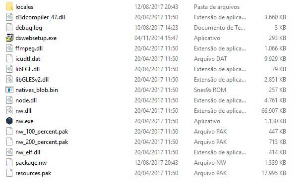

Como proteger seus assets Build PC

Como podem ver na imagem acima, é a estrutura da build windows de projetos do Construct 2, quando enviamos o nosso jogo para a Steam ou até
mesmo distribuimos o nosso jogo em sites como Itch.io,
Gamejolt, etc, normalmente não utilizarmos alguma proteção dos
dados, caso não saiba o arquivo package.nw, é apenas os assets do seu jogo compactados, onde facilmente pode ser modificando para
a extenção .rar ou .zip, sendo possível abrir o arquivo ou extrair, dando acesso a todos os assets do projeto.
Em uma conversa com o amigo Deco Monteiro, ele me apresentou
uma alternativa simples utlizando um script Batch
em batch para proteger os arquivos jogo, este que estou abordando neste devlog.
Será abordado apenas a proteção para a build Windows.
Como no Devlog "Matar processo do NW.exe" o processo para criar o script é bem simples, copie
o conteúdo texto abaixo que está dentro quadro, cole em um bloco de notas, escolha a opção Salvar Como..., na próxima janela, existem 2
opções, Nome do Arquivo e Tipo escolha Tipo e depois a opção Todos os arquivos, agora mude a
extenção de .txt para .bat, feito isso basta colocar o arquivo na pasta onde está os arquivos da build do projeto e executar.
 Após executar o batch será gerado um novo arquivo com o nome renomeieSeuJogo.exe, que é auto sugestivo, este arquivo
contém o nw.exe + package.nw compilados para apenas um
arquivo binário, desta
forma seus arquivos agora tem uma camada de proteção, também foi criado uma pasta chamada backup e movido os arquivos que foram
usados no processo, também foi criado junto um arquivo .txt contendo instruções caso seu jogo não funcione.
Como podem perceber, este script é bem simples, se comparado com o Devlog "Matar processo do NW.exe".
Após executar o batch será gerado um novo arquivo com o nome renomeieSeuJogo.exe, que é auto sugestivo, este arquivo
contém o nw.exe + package.nw compilados para apenas um
arquivo binário, desta
forma seus arquivos agora tem uma camada de proteção, também foi criado uma pasta chamada backup e movido os arquivos que foram
usados no processo, também foi criado junto um arquivo .txt contendo instruções caso seu jogo não funcione.
Como podem perceber, este script é bem simples, se comparado com o Devlog "Matar processo do NW.exe".
echo off
md backup
copy /b nw.exe+package.nw renomeieSeuJogo.exe
move nw.exe backup
move package.nw backup
copy NUL ajuda.txt
echo Foi gerado um novo arquivo, agora colocando uma camada de protecao ao seus assets. > ajuda.txt
echo Tambem foi criado uma pasta com o nome backup, para guardar os arquivos antigos, caso tenha algum problema no processo. >> ajuda.txt
echo Agora basta apenas renomear o arquivo "renomeieSeuJogo.exe", pode distribuir. >> ajuda.txt
echo Script criado por Fred Oliveira. >> ajuda.txt
move ajuda.txt backup
timeout / 3
exit
Explicação do código acima
echo off, serve para ocultar o caminho da pasta, exemplo c:/user/pc/desktop/ md backup, o comando "MD" cria uma "diretório" backup é o nome dado. copy /b nw.exe+package.nw renomeieSeuJogo.exe, aqui é onde a mágica acontece, "copy" é o comando para copiar arquivos em propt comando, o parâmetro "/b" indica que será um arquivo binário, o parâmetro "nw.exe+package.nw" é a indicação dos arquivos que serão copiados para o novo arquivo binário, por fim "renomeieSeuJogo.exe", é o nome do binário criado, sendo também sugestivo para alteração posterior. move nw.exe backup, "move" similar ao comando "copy", porém o move só vai mover o arquivo para o diretório escolhido no parâmetro, neste caso "backup". move package.nw backup, move o arquivo "package.nw" para a pasta "backup". copy NUL ajuda.txt, vai criar um arquivo com o nome ajuda.txt vazio, ainda no mesmo diretório da build. echo... , As próximas 4 linhas "echo", é exibido um texto na tela, depois o comando "> ajuda.txt", envia o que apareceu na tela para o arquivo "ajuda.txt" move ajuda.txt backup, move o arquivo "ajuda.txt" para o diretório "backup". timeout / 3, vai aparecer uma contagem regressiva começando em 3, serve apenas para que possa ver os processos executados no script, caso queira pode remover ela. exit, termina a execução do script e fecha a tela.